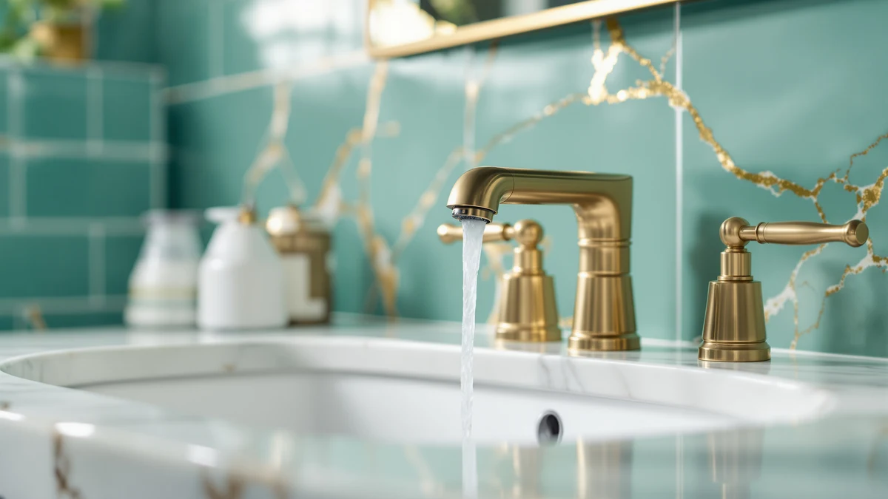

How to Install Bathroom Sink Faucets: Complete Guide (2026)
Prices and picks verified as of October 2026. Independent, reader-supported reviews.


Things to Know Before You Buy
- Most bathroom sink faucets use a single hole, a 4-inch centerset, or an 8-inch widespread pattern, so measure your sink's existing holes before you buy a replacement.
- Shutting off the two valves under the sink, rather than the main valve for the house, keeps the job contained to one fixture.
- A basin wrench is the one tool that makes installing bathroom sink faucets manageable in the cramped space behind a cabinet.
- Plumber's putty or silicone keeps the base watertight, and PTFE tape prevents slow leaks at every threaded connection.
- Budget about 45 minutes for a straightforward swap, longer if corroded nuts or old putty need extra work to remove.
Learning how to install bathroom sink faucets saves you a plumber's call and, once the water is off, rarely takes more than an hour. The job comes down to four mechanical steps: disconnect the old fixture, seat the new one, hook up the supply lines, and check everything for leaks. None of it requires special plumbing training, but it does reward patience, since a rushed connection is the most common reason a finished install drips a week later.
This guide walks through the process start to finish, from shutting off the water to the final leak check, and lists the handful of tools and supplies that make the job go faster. It applies whether you're swapping in a basic two-handle faucet or one of the touchless, sensor-driven models featured further down the page. Read through the steps once before you start, gather the tools listed below, and you'll have a working faucet before the afternoon is over.
What You'll Need
- Supplies: plumber's putty or silicone sealant, PTFE thread tape, and a set of braided steel supply lines
- Tools: a basin wrench and an adjustable wrench or slip-joint pliers, the two tools you need to install bathroom sink faucets without fighting the cabinet walls
Step 1: Shut off the water supply and clear the lines
Before you install bathroom sink faucets of any kind, cut off the water first. Reach under the sink and turn both shutoff valves clockwise until they stop. If your bathroom has no shutoff valves, or they're seized from age, close the main water valve for the house instead, and plan on replacing those valves while you're already under there.
Once the valves are closed, open the faucet handles at the sink to release pressure and drain whatever water remains in the supply lines. Keep a small bucket or an old towel underneath; a cup or two of water typically runs out even after the valves are fully shut. Confirm the flow has actually stopped before you move on, because a faucet install with live water behind it turns into a flood fast.
Step 2: Remove the old faucet
With the water off, disconnect the supply lines first, from the shutoff valves and then from the faucet tailpieces, using an adjustable wrench or slip-joint pliers. A little water will drip out of the lines, so keep that bucket handy.
Next, reach up into the cramped space behind the sink with a basin wrench and loosen the mounting nuts holding the faucet to the deck. This is the step where most people learn why installing bathroom sink faucets without a basin wrench is nearly impossible: the nuts sit in a spot your hand can't reach, and a regular wrench can't angle into the space.
Once both nuts are off, lift the old faucet straight up and out. Scrape away any old plumber's putty or caulk residue from the sink deck with a plastic putty knife so the new faucet seats on a clean, flat surface.
Step 3: Set the new faucet in place
Roll a thin rope of plumber's putty and press it around the underside of the new faucet base, or run a bead of silicone sealant instead if the manufacturer's instructions call for it. Some faucets ship with a rubber gasket that replaces putty entirely, so check the box before you reach for either one.
Feed the faucet's supply lines and mounting hardware down through the holes in the sink deck, then lower the faucet into position from above and align it so it sits straight and centered. This is the point where you install bathroom sink faucets permanently, so take an extra moment to confirm the faucet is square before you tighten anything.
From underneath, thread the mounting nuts or bracket onto the faucet's shank and hand-tighten them until the faucet stops shifting on the deck.
Step 4: Secure the faucet and connect the supply lines
Switch to the basin wrench to finish tightening the mounting nuts. Snug them down firmly, but stop once the faucet feels locked in place. Overtightening can crack a porcelain sink deck or strip the plastic mounting threads on some faucet models.
Wrap PTFE tape clockwise around the threaded ends of the supply lines, two or three wraps is enough, then connect one end to the faucet's tailpieces and the other to the shutoff valves. Hand-tighten the compression nuts first, then give each one a quarter turn with an adjustable wrench. If you're connecting a touchless or motion-sensor model, this is also when you route the battery pack or power cord through the cabinet before you close everything up.
Step 5: Turn the water back on and test for leaks
Turn both shutoff valves counterclockwise slowly rather than cranking them open all at once; a sudden rush of pressure can loosen a fitting you just tightened. Run the faucet on hot, then cold, for about a minute each, and watch the spray pattern for sputtering, which usually means trapped air still needs to clear the lines.
While the water runs, get back under the sink with a flashlight and a dry paper towel, and wipe every connection: the supply line nuts, the mounting nuts, and the base of the faucet itself. Any dampness on the towel means a fitting needs another quarter turn, not a full retightening. Once everything stays dry for a few minutes of running water, you've finished installing bathroom sink faucets correctly and can close up the cabinet.
Common Mistakes to Avoid
The most common mistake people make when they install bathroom sink faucets is skipping the shutoff valve test before buying anything. If a valve hasn't been touched in a decade, it may not close all the way, and you won't find out until the sink is half disassembled and water is still trickling through the line. Test both valves first, and replace them if they feel loose or won't stop the flow completely.
Mismatched mounting holes cause the second most common holdup. Faucets come in single-hole, 4-inch centerset, and 8-inch widespread configurations, and a faucet bought for the wrong spread simply won't sit on the deck. Measure your existing holes with a tape measure before you order a replacement, not after it arrives.
Skipping the PTFE tape, or wrapping it in the wrong direction, is another frequent error. Tape wound counterclockwise unwinds as you thread the fitting, which defeats the seal entirely. Wrap it clockwise, in the direction the nut turns onto the threads.
Finally, people often overtighten the mounting nut trying to stop a wobble, which can crack a porcelain sink or strip a plastic nut. If the faucet still rocks after a firm hand-tightening plus a quarter turn with a wrench, the problem is usually a misaligned gasket, not a nut that needs more force.
Our Top Picks
If you're replacing an old fixture while you're already under the sink, these three touchless faucets install using the same steps above and cover a range of budgets.

Editor's Pick
HHOOMMEE Automatic Touchless Bathroom Sink
A motion-sensor faucet at a mid-range price. Owners report reliable hand detection and an easy single-hole install that follows the same steps outlined above.
$79.99
Check Price on Amazon
Best Value
Charmingwater Touchless Bathroom Sink Faucet
Pricier than most touchless options, but reviewers consistently note a smoother sensor response and a sturdier deck plate once it's installed.
$149.99
Check Price on Amazon
Premium Choice
Luxice Touchless Bathroom Sink Faucet
A budget-friendly touchless pick. Owners say it handles the standard installation steps above without needing any extra hardware.
$81.21
Check Price on AmazonFrequently Asked Questions
How long does it take to install a bathroom sink faucet?
Most single-hole or widespread faucets install in 30 to 45 minutes once the water is shut off, as long as the mounting holes already match and the shutoff valves work properly. Corroded nuts or old putty residue can add another 20 minutes to the job.
Do I need to turn off the water to the whole house?
No. If the shutoff valves under your sink work, closing just those two valves cuts water to that fixture alone. Shut off the main valve only if the valves under the sink are missing, seized, or won't close fully.
Can I install a bathroom sink faucet without a basin wrench?
It's possible on a sink with wide open access underneath, but most vanities box in the mounting nuts too tightly for a standard wrench to reach. A basin wrench costs about $15 and makes the job considerably faster.
What's the difference between a single-hole and a widespread faucet?
A single-hole faucet mounts through one hole and combines the spout and handles into one unit, while a widespread faucet has separate hot, cold, and spout pieces that mount across three holes, usually 8 inches apart. Measure your existing holes before you buy a replacement in either style.
Why is my new faucet leaking at the base after installation?
A base leak after installing bathroom sink faucets almost always means the plumber's putty or silicone didn't form a complete seal, or the included gasket shifted during mounting. Remove the faucet, clean off the old putty, and reseat it with a fresh bead of sealant.
Verdict
Once you've gone through the process of how to install bathroom sink faucets, you'll find the job is mostly about preparation rather than skill. Shutting off the water fully, measuring your mounting holes before you buy, and keeping a basin wrench within reach solve most of the problems that turn a simple swap into an afternoon project. The five steps above work the same way whether you're installing a basic two-handle faucet or a sensor-driven model like the HHOOMMEE automatic touchless faucet featured above, which mounts through the same single hole as a standard fixture and asks for nothing beyond the tools already listed here. Budget 45 minutes for a straightforward job, keep a towel under the connections while the water runs for the first time, and recheck every fitting a day later once the pipes have settled. Do that, and the faucet you install today should outlast several bathroom remodels.